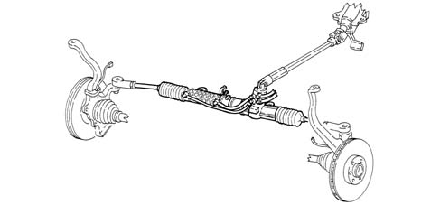

4130A power steering box
- Path
- Descriptions > 41 STEERING > 4130 POWER ASSISTED STEERING > 4130A power steering box
- Kind
- system description
- Applies to
- all engines; all production periods
- Interactive page
- https://sloeber94.github.io/elrnDB-a156/en/#/3232936
Applies to: all engines; production: fino a 03/98, da 04/98 a 02/99
Refer 41
Applies to: engines: 1.6 TS , 1.8 TS, 2.0 JTS, 2.0 JTS; all production periods
CONSTRUCTION FEATURES
The steering box has been designed with over-rated rack and tie-rods, in order to absorb significant stresses, to limit as much as possible the elastic yields of the steering line and thus ensure better driving precision

Applies to: engines: 3.2 V6; all production periods
CONSTRUCTION FEATURES
The steering box has been designed with over-rated rack and tie-rods, in order to absorb significant stresses, to limit as much as possible the elastic yields of the steering line and thus ensure better driving precision
Applies to: engines: 2.5 V6, 1.9 JTD 8v , 2.4 JTD 10v; all production periods
CONSTRUCTION FEATURES
The steering box has been designed with over-rated rack and tie-rods, in order to absorb significant stresses, to limit as much as possible the elastic yields of the steering line and thus ensure better driving precision